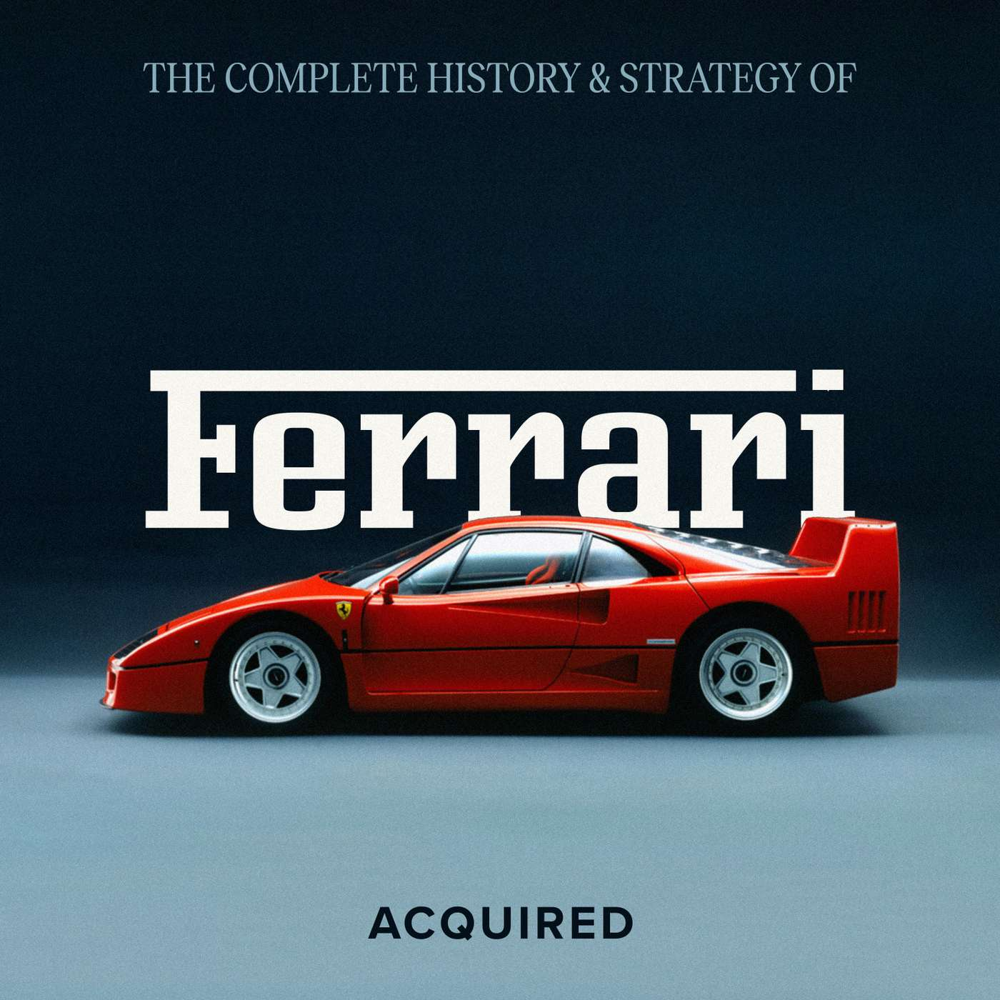

FreeBSD with John Baldwin
›
FreeBSD is one of the longest-running and most widely used operating systems.
63 min · Mar 31

Ferrari
›
Ferrari is the pinnacle of luxury scarcity.
239 min · Apr 8
Current Dioxus desktop browser layout, with the sidebar, shared episode cards and bottom mini player. The sample viewport is 1100 × 740, including browser chrome.

Source: webui/routes/src/components/sidebar.rs · webui/routes/src/components/navbar.rs · webui/app/tailwind.css